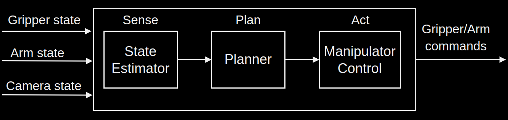
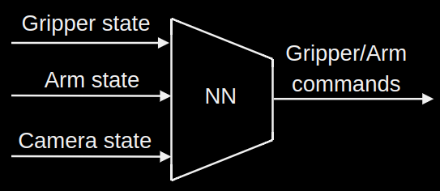

A sub domain is visuo-tactile motor control where an additional input to the controller comes from a tactile sensor. But, cameras are still being used.
Unlike manipulator control, Visuomotor policy aims to control both the state of the robot $q_{robot}$ and that of the environment $q_{env}$ (includes objects like mugs, bowls etc) which is a more general goal.
Design approaches
There are more similarities than differences between the different approaches. For example, the mapping (internal representation of the model) from observations (sensor interpretations) to action-commands obtained using NN can be achieved by model based control if the later uses a better planning infrastructure.
Model based control

State estimator
It includes a perception module - pose estimation, creation of oct-tree for objects that are not of interest in terms of manipulation but are important in terms of obstacle avoidance.
Strong assumptions are made here that the state of the world can be summarised in a form that can be used by the multi-body planning tools.
Planner
It could include a kinematic trajectory optimisation or sample based planner.
Behaviour cloning
It is also called Supervised sequence learning.

A big neural network maps the inputs to the commands.
It is scalable.
It depends on collecting a large number of demonstrations.
It takes a history of observations to predict the next action - it does not provide an immediate mapping from the outputs of the sensors to the arm/gripper commands.
~50 for single arm dough rolling. ~100 for 2 arms. Haptic-teleop interfaces are used. A foundation model would require much more. Human demonstrations alone may not be scalable to the big goal.
It gets rid of the strong assuption in model based control that the state of the environment can be summarised.
NNs could learn, in a better way, to estimate states of the environment (with the aim of predicting the next action from any observation) by not being constrained by human imagination and hence could be more powerful than the more structured model based pipeline.
Reinforcement learning
RL is a mix of both - it makes use of models but avoids the sense-plan-act structure. It requires less supervision (demonstrations) but it is also a harder optimisation problem.
RL often uses BC in the last stage of its pipeline to transition from state feedback to camera feedback.